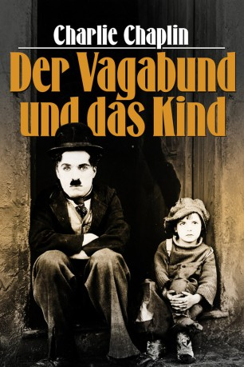

#7117 Der Vagabund und das Kind
Alternativ: The Kid
 
 IMDB-Wertung: 8.3 / 10
IMDB-Wertung: 8.3 / 10  IMDB-TOP-Platzierung: 101
IMDB-TOP-Platzierung: 101  Metascore: 0
Metascore: 0 
Stummfilmkalssiker aus dem Jahre 1921 von und mit Charlie Chaplin. Charlie Chaplin ist in der Rolle des Landstreichers zu sehen, der einem kleinen Kind (Jackie Coogan) begegnet und ungeplanter Weise zu seinem Ziehvater wird. Die Mutter des Kleinen ist eine berühmte Schauspielerin (Edna Purviance) und fordert den Jungen schliesslich zurück...
Jahr: 1921
Dauer: 52 Minuten
FSK: 0
Land: USA Studio: First National PicturesTonspuren:
Untertitel: Deutsch,
Auflösung: 1080p (1440x1080) Größe: 4485 MB
Genre: Drama, Komödie, Familie
Regisseur:  Charles Chaplin
Charles Chaplin
Drehbuch: Charles Chaplin
Soundtrack:
Darsteller:
- Edna Purviance als The Woman
- Jackie Coogan als The Child
 Charles Chaplin als A Tramp
Charles Chaplin als A Tramp Edward Biby als Orphan Asylum Driver , uncredited
Edward Biby als Orphan Asylum Driver , uncredited- Frank Campeau als Welfare Officer , uncredited
- Lita Grey als Flirtatious Angel , uncredited
- Esther Ralston als Extra in Heaven Scene , uncredited
- Carl Miller als The Man
- Albert Austin als Man in Shelter , uncredited
- Beulah Bains als Bride , uncredited
- Nellie Bly Baker als Slum Nurse , uncredited
- Henry Bergman als Professor Guido / Night Shelter Keeper , uncredited
- F. Blinn als His Assistant , uncredited
- Kitty Bradbury als Bride's Mother , uncredited
- Bliss Chevalier als Extra in Wedding Scene , uncredited
- Frances Cochran als Extra in Reception Scene , uncredited
- Elsie Codd als Extra in Alley Scene , uncredited
- Jack Coogan Sr. als Pickpocket / Guest / Devil , uncredited
- Estelle Cook als Extra in Wedding Scene , uncredited
- Lillian Crane als Extra in Wedding Scene , uncredited
- Philip D'Oench als Extra in Wedding Scene , uncredited
- Dan Dillon als Bum , uncredited
- Robert Dunbar als Bridegroom , uncredited
- Florette Faulkner als Extra in Wedding Scene , uncredited
- Rupert Franklin als Bride's father / Extra in Reception Scene , uncredited
- Sadie Gordon als Extra in Heaven Scene , uncredited
- Frank Hale als Extra in Reception Scene , uncredited
- Martha Hall als Extra in Wedding Scene , uncredited
- Jules Hanft als Physician , uncredited
- Louise Hathaway als Extra in Alley Scene , uncredited
- Silas Hathaway als The Kid as a Baby , uncredited
- Flora Howard als Bridesmaid , uncredited
- Ed Hunt als Extra in Reception Scene , uncredited
- Lulu Jenks als Extra in Heaven Scene , uncredited
- Irene Jennings als Extra in Wedding Scene , uncredited
- Kathleen Kay als Maid , uncredited
- Grace Keller als Extra in Wedding Scene , uncredited
- Sarah Kernan als Extra in Wedding Scene , uncredited
- Raymond Lee als His Kid Brother , uncredited
- Walter Lynch als Tough Cop , uncredited
- V. Madison als Extra in Wedding Scene , uncredited
- Clyde McAtee als Extra in Reception Scene , uncredited
- Michael J. McCarthy als Extra, angel Heaven &, cook Alley Scene , uncredited
- John McKinnon als Chief of Police , uncredited
- Ethel O'Neil als Extra in Heaven Scene , uncredited
- Lew Parker als Extra in Heaven Scene , uncredited
- Charles I. Pierce als Extra in Wedding Scene , uncredited
- Laura Pollard als Extra in Heaven Scene , uncredited
- Evans Quirk als Extra in Wedding Scene , uncredited
- Granville Redmond als The Man's Friend , uncredited
Datei: X:\1900-1949\Vagabund und das Kind, Der (1921, FSK0, 1440x1080).mkv seit 28.09.2017
Festplatte: HD 1900-1970
 Es gibt insgesamt 80 Filme in der Gruppe '1900-1949'
Es gibt insgesamt 80 Filme in der Gruppe '1900-1949'